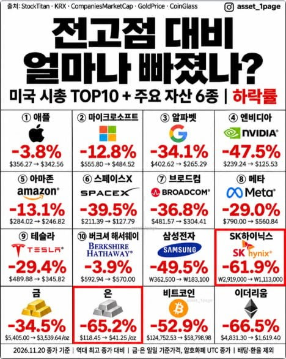

개드립에서 애플 까고 워렌버핏 반도체도 안산 은퇴한 뒷방 노인네라고 할때 애플 버크셔 살껄

개드립에서 애플 까고 워렌버핏 반도체도 안산 은퇴한 뒷방 노인네라고 할때 애플 버크셔 살껄
애플 좆되긴하네
월요일도 좆된거같다... 계좌 마60퍼다 진짜씨발
그렇다면 10년전에 비하면 얼마나 올랐나
버핏 구글 샀잖아..
나 궁금한거 하나있다 몇달전만해도 주식잔고 보여주면서 2억 3억 벌었다고 했던 사람들 많았는데 그 사람들은 번만큼 떨어진거냐 아니면 본전도 잃고 있는거냐? 주식 아무것도 몰라서 물어보는거임 그때 개부러웠거든 ㅋ
벌은사람이 거의 없다고 보는거지 지금
두달째 매매없이 현금보유중
1년전 대비 +250% = +7.4억
덕분에 주담대 하나 털고 무대출의 삶을 만끽중
듀오가 아무리 병신이어도 애플은 애플이네
버핏 패턴
상승기 초입에서 현금 확보 시작함 -> 상승기에 올라탄 개미들이 푼돈 벌기 시작함 -> 이 쉬운 돈복사도 못 한다고? 할배쉑 노망났노 ㅋㅋㅋㅋ 기고만장 시작 -> 상승기 최고점 다다름. 불장 도파민 파티에 개미들 뇌 망가지기 시작함 -> 상승 꺾이고 내려왔다가 살짝 기술적 반등. 개미들 "역시 지금은 역대급 불장이다. 풀배팅 가즈아" -> 기술적 반등 끝나고 내리 꽂기 시작 -> 처음에는 현실 부정 -> 뉴스에 하락을 설명하는 근거들 보도되기 시작함 -> 개미들 등골 서늘해지는 거 느낌 -> 버핏의 현금 보유 상황 보도되기 시작 -> 할배 욕하던 개미들 대가리 박음 -> 이걸 50년 동안 반복함